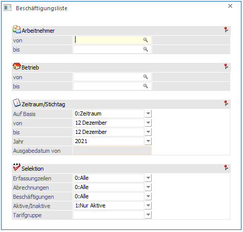
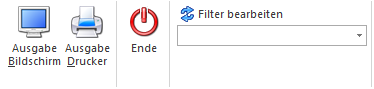
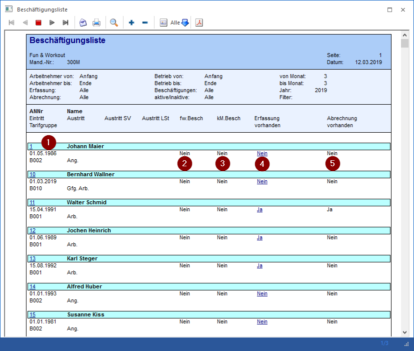
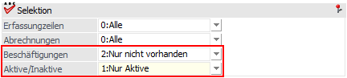
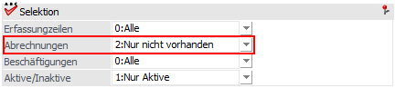
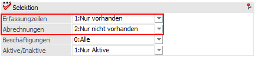

Mit der Beschäftigungsliste, die über den Menüpunkt
1 Auswertungen
1 Beschäftigungsliste
aufgerufen werden kann, können unterschiedliche Abfragen im Zusammenhang mit den Beschäftigungen der Arbeitnehmer durchgeführt werden.

Dabei stehen folgende Auswahlfelder zur Verfügung:
Ø Arbeitnehmer von - bis
Hier können die Arbeitnehmer ausgewählt werden, die ausgewertet werden sollen. Mit der F9-Taste kann auch nach allen angelegten Arbeitnehmern gesucht werden.
Ø Betrieb von - bis
Einschränkung des Betriebes, der ausgewertet werden sollen. Über die Matchcodefunktion kann nach allen angelegten Betrieben gesucht werden.
Zeitraum/Stichtag
Ø Auf Basis
ü 0 - Zeitraum
Es kann nach
Periode von - bis selektiert werden
ü 1 - Stichtag
Es kann ein
bestimmter Stichtag bei Ausgabedatum von hinterlegt werden um zB. alle gültigen
Beschäftigungen vom 31.12 abzufragen
Ø von - bis
Aus der Auswahllistbox kann das bzw. können die Monate ausgewählt werden, für die die Auswertung durchgeführt werden soll. Standardmäßig wird die aktuell eingestellte Abrechnungsperiode vorgeschlagen.
Ø Jahr
Hier kann das Abrechnungsjahr eingegeben werden, für das die Auswertung durchgeführt werden soll. Standardmäßig wird das aktuelle Abrechnungsjahr vorgeschlagen.
Ø Ausgabedatum von
Hier kann ein Stichtag eingegeben werden, zudem ausgewertet werden soll. Dazu muss zuvor bei Basis der Stichtag ausgewählt werden.
Selektion
Ø Erfassungszeilen
Aus der Auswahllistbox kann gewählt werden, wie Erfassungszeilen abgeprüft werden sollen:
ü 0 - Alle
Es werden alle
Arbeitnehmer angezeigt, unabhängig davon, ob sie im ausgewählten Zeitraum
Erfassungszeilen haben oder nicht.
ü 1 - Nur vorhanden
Es werden nur
die Arbeitnehmer angezeigt, die im ausgewählten Zeitraum Erfassungszeilen
haben.
ü 2 - Nur nicht vorhanden
Es
werden nur die Arbeitnehmer angezeigt, die im ausgewählten Zeitraum keine
Erfassungszeilen haben.
Ø Abrechnungen
Aus der Auswahllistbox kann gewählt werden, wie Abrechnungen abgeprüft werden sollen:
ü 0 - Alle
Es werden alle
Arbeitnehmer angezeigt, unabhängig davon, ob sie im ausgewählten Zeitraum eine
Abrechnung haben oder nicht.
ü 1 - Nur vorhanden
Es werden nur
die Arbeitnehmer angezeigt, die im ausgewählten Zeitraum eine Abrechnung
haben.
ü 2 - Nur nicht vorhanden
Es
werden nur die Arbeitnehmer angezeigt, die im ausgewählten Zeitraum keine
Abrechnung haben.
Ø Beschäftigungen
Aus der Auswahllistbox kann gewählt werden, wie Beschäftigungen abgeprüft werden sollen:
ü 0 - Alle
Es werden alle
Arbeitnehmer angezeigt, unabhängig davon, ob sie im gewählten Zeitraum eine
Beschäftigung haben oder nicht.
ü 1 - Nur vorhanden
Es werden nur
die Arbeitnehmer angezeigt, die im ausgewählten Zeitraum eine Beschäftigung
haben.
ü 2 - Nur nicht vorhanden
Es
werden nur die Arbeitnehmer angezeigt, die im ausgewählten Zeitraum keine
Beschäftigung haben.
Ø Aktive/Inaktive
Aus der Auswahllistbox kann gewählt werden, welche Arbeitnehmer angezeigt werden sollen:
ü 0 - Alle
Es werden alle
Arbeitnehmer angezeigt, unabhängig davon, ob sie im gewählten Zeitraum aktiv
oder inaktiv sind.
ü 1 - Nur Aktive
Es werden nur
die Arbeitnehmer angezeigt, die zum Zeitpunkt der Auswertung aktiv sind.
ü 2 - Nur Inaktive
Es werden nur
die Arbeitnehmer angezeigt, die zum Zeitpunkt der Auswertung Inaktiv sind.
Ø Tarifgruppe
Hier kann auf eine bestimmte Tarifgruppe gefiltert werden.
Buttons

Ø Ausgabe Bildschirm / Ausgabe Drucker
Es kann gewählt werden, ob die Ausgabe am Bildschirm oder am Drucker durchgeführt werden soll. Standardmäßig wird die Ausgabe auf Bildschirm vorgeschlagen, die auch durch Drücken der F5-Taste gestartet werden kann.
Ø Ende
Durch Drücken der ESC-Taste wird das Fenster geschlossen.
Ø Filter
Aus der Auswahllistbox kann ein bestehender Filter ausgewählt werden, über den der Umfang des Ausdruckes bestimmt werden kann. Es stehen alle Werte aus dem AN-Stamm als Selektions- und Sortierkriterium zur Verfügung. Durch Anklicken des Filter-Buttons kann auch ein neuer Filter definiert werden.
Wenn die Ausgabe am Bildschirm durchgeführt wird, kann das Ergebnis so aussehen:

In der Liste sind folgende Informationen enthalten:
Im Kopfbereich werden die angewendeten Selektionen angezeigt, damit man jederzeit nachvollziehen kann, was der Inhalt der Auswertung ist.
Im Mittelteil sind folgende Daten ersichtlich:
Ø 1
Hier werden die AN-Nummer und der Name angezeigt. Darunter stehen Informationen wie der Beginn des Beschäftigungsverhältnisses und die Tarifgruppe mit der Bezeichnung. Wenn man die AN-Nummer anklickt, wird der AN-Stamm für den betreffenden AN geöffnet, wobei gleich in das Register SV mit den Beschäftigungen gewechselt wird.
Ø 2
In der Spalte "fw.Besch" wird angezeigt, ob es sich um einen "fallweise Beschäftigten" handelt oder nicht.
Ø 3
In der Spalte "kM.Besch" wird angezeigt, ob es sich bei der Beschäftigung um eine "kürzer als ein Monat vereinbarte" Beschäftigung handelt oder nicht.
Ø 4
In dieser Spalte "Erfassung vorhanden" wird angezeigt, ob für das (die) ausgewählte(n) Monat(e) bereits eine Erfassung vorhanden ist oder nicht. Wenn mehrere Monate ausgewählt wurden, wird diese Information pro Monat angezeigt. Durch einen Klick auf die Anzeige Nein/Ja wird die Einzelerfassung für den AN in der aktuellen Abrechnungsperiode geöffnet, unabhängig davon, auf welches Monat geklickt wurde (wenn mehrere Monate ausgewählt wurden).
Ø 5
In dieser Spalte "Abrechnung vorhanden" wird angezeigt, ob für das (die) ausgewählte(n) Monat(e) eine Abrechnung vorhanden ist. Wenn mehrere Monate ausgewählt wurden, wird diese Information auch pro Monat angezeigt.
Abfragevarianten
Mit dieser Liste können unterschiedliche Fragestellungen abgedeckt werden:
Ø Frage:
Gibt es aktive AN, bei denen in der aktuellen Periode keine Beschäftigung eingetragen ist (bei so einem AN würde in der Einzelabrechnung auch eine entsprechende Meldung angezeigt werden)?
Ø Lösung:

In dem Fall muss im Feld "Beschäftigung" die Option "2 - Nur nicht vorhanden" ausgewählt werden, zusätzlich kann auch noch die Option "Nur Aktive" eingestellt werden.
Ø Frage:
Gibt es AN, wo eine Beschäftigung hinterlegt ist, die noch nicht abgerechnet wurde, z.B. für fallweise Beschäftigte?
Ø Lösung:

In dem Fall muss im Feld "Abrechnungen" die Option "2 - Nur nicht vorhanden" ausgewählt werden.
Ø Frage:
Gibt es AN, wo bereits Erfassungszeilen vorhanden sind, die aber noch nicht abgerechnet wurden?
Ø Lösung:

In diesen Fall muss die Option "Erfassungszeilen" auf "1 - Nur vorhanden" und die Option "Abrechnungen" auf "2 - Nur nicht vorhanden" gestellt werden.